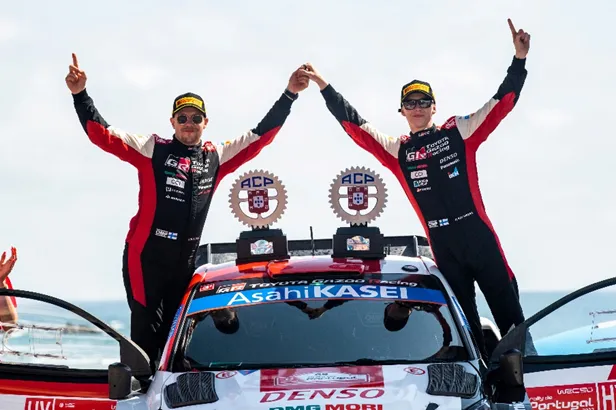
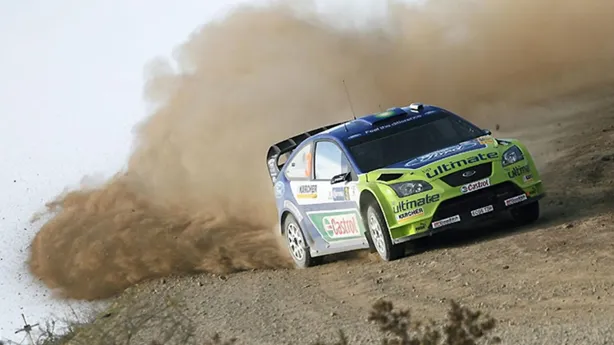
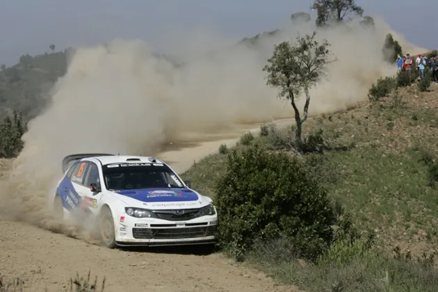
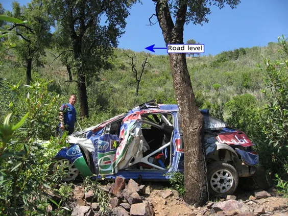
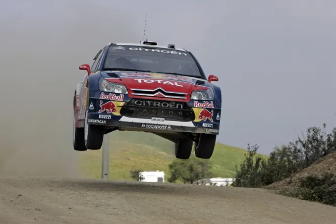
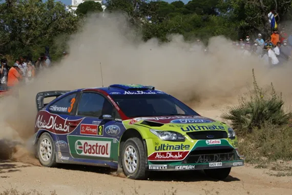

Marcus Gronholm's one off in a Subaru - A throwback to Rally Portugal 2009
The WRC is back this week, with the 2nd gravel rally of the season in Portugal. For that reason, this week we will be taking a look at some past versions of the rally, with the first one being the 2009 version.
Kalle Rovanpera won in Portugal last year despite being first on the road, beating Elfyn Evans by 15s
After the famous 2001 rally (or infamous I should say), Rally Portugal wasn’t featured on the calendar in 2002, and wouldn’t feature until 2007. The event wouldn’t be back to the north of Portugal though, that would take another 8 years, but in the south, in the Algarve, with the rally base being in Faro. Sebastien Loeb won the rally ahead of Petter Solberg after the Fords were given 5-minute penalties due a technical infringement. In 2008 the rally was part of the IRC, but it would return for 2009.

A technical infringement dropped Marcus Gronholm from 2nd to outside the podium places in 4th
The entry list for Rally Portugal in 2009 had some surprises, as on it there was 2 times champion Marcus Gronholm, entered in a Subaru Impreza WRC ’08 ran by Prodrive. The Finn had retired from the WRC at the end of 2007, and he was back for a one-off rally. Prodrive had also left WRC in the end of 2008 after Subaru pulled out of the sport, so seeing a legendary driver in a historic team, in one of the most famous rallies in the championship, brought in a lot of hype heading into the event.

Marcus Gronholm driving the ’08 Subaru
After the Thursday SSS, the drivers headed for the proper stages north of Faro. Sebastien Loeb would struggle in the morning, as he was the championship leader, meaning he had the privilege of cleaning the roads for the rest. The Frenchman lost 26 seconds on the first stage to Jari-Matti Latvala after having an overshoot. Latvala built himself a 10 second lead over Loeb’s teammate, Sordo in the first two stages. But as so often was the case early in his career, his rally would come unstuck on Stage 4. The Finn was too fast over a crest and clipped a bank which sent his Ford Focus over the protective armco and rolling down the hill-side. The car was totaled, but thankfully both him and co-driver Miika Anttila were ok.

Latvala’s Focus after the crash
That left Sordo in the lead of the rally heading into midday service, with Marcus Gronholm just 1.2s behind him and his former teammate in Ford, Mikko Hirvonen completing the early podium in 3rd. In the afternoon, Sordo got caught out on the same corner that caught out his teammate in the morning, and dropped to 3rd behind Hirvonen and Gronholm. Mikko Hirvonen lead the rally after Friday, with Sordo in 2nd and Loeb in 3rd. Gronholm lost time on the last stage of the day after being stuck behind Al-Qassimi’s dust trail, and then losing more time than he wanted, getting his maths wrong as he said, not wanting to lead the rally and sweep the road on Saturday. He was still a respectable 23.9 off the lead and 5s off his old rival Loeb.

Loeb would take command of the rally on Saturday
Unfortunately,
Gronholm’s return rally would be cut short on the first stage of the day, as he
clipped a tree with the rear of the car, which sent him rolling into a ditch.
Loeb was in control after that, the 5 times champion (feels weird to type that)
won all of Saturday’s stages and built himself a 26.8s lead over Hirvonen. The
Citroen driver won the first pass of the Almodovar stage by 12s over Sordo in 2nd
and was half a second per kilometer faster than Hirvonen !

Hirvonen couldn’t match Loeb on Saturday, hampered by road sweeping
After that it was all smooth sailing for Loeb. He won the rally by 24s over Hirvonen and got his 4th successive win in as many events. People may have thought that Loeb would dominate, and win the championship with ease, but they’d be wrong, as a series of bad results in the 2nd half of the season brought Hirvonen right back into contention.
By Dimitris Theodorou


Comments